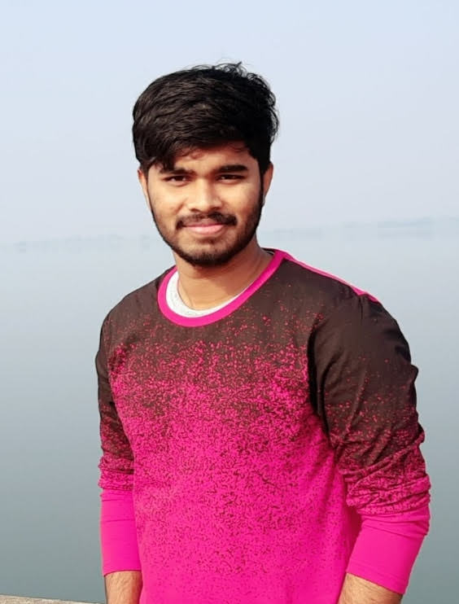
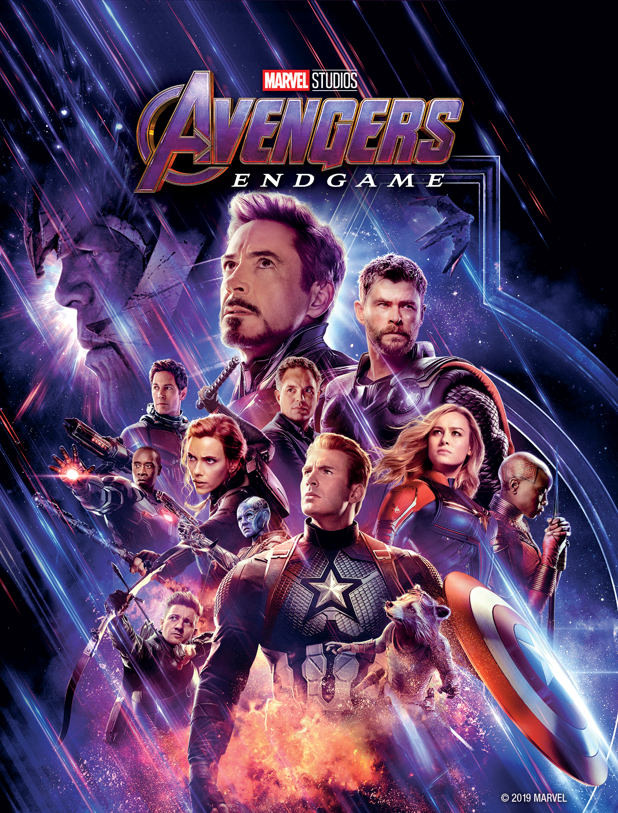

I am Ramesh currently pursuing masters in Applied computer science course in NWMSU. My hobbies are reading books, Exploring new Technologies and I enjoy cooking. I like to play cricket and some other ooutdoor games. I like to get involved in club activities and get exposed to different cultures. I have done my bachelors in Mechanical Engineering now switched to computer science background to integrate both concepts for my future projects.
The Marvel Cinematic Universe has given us a plethora of great, quirky and three-dimensional characters. Everyone has their favourite, whether you are Team Iron Man or Team Cap, a fan of the Guardians or all about Ant-Man audiences have come to be fully invested in these characters. As such, it was important for Endgame to not only be true to the characters, but to make sure that their stories were brought to an end in a way that was fitting.
